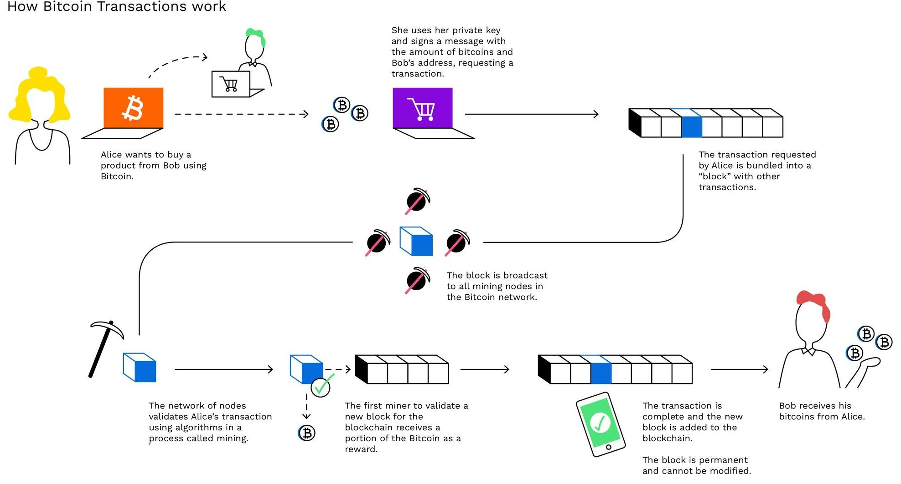
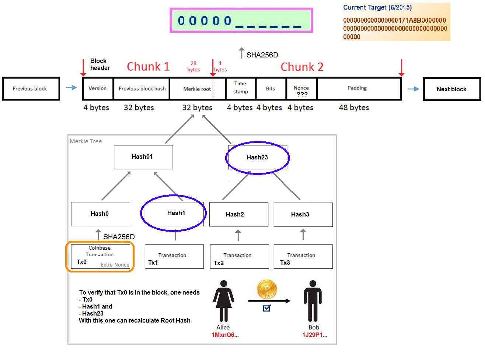
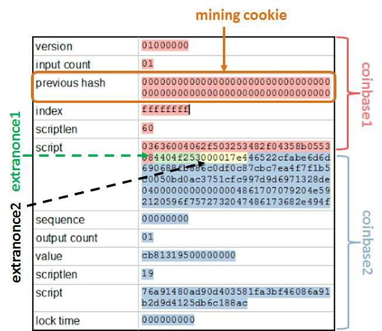
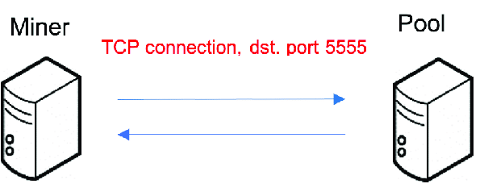
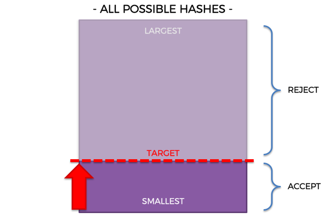
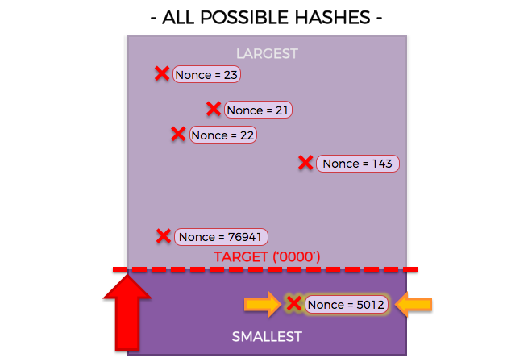

BTC Stratum Protocol
> mining.subscribe(userAgent/version, extraNonce1)
< mining.notify(subscriptions, extraNonce1, extraNonce2Size)
> mining.authorize(userName, password)
< mining.set_difficulty(difficulty)
< mining.notify(jobId, hashPrevBlock, coinbase1, coinbase2, merkleBranchesList, blockVersion, nBits, nTime, clean)
> mining.submit(userName, jobId, extraNonce2, nTime, nOnce)
ZEC Stratum Protocol
> mining.subscribe(userAgent/version, sessionId)
< result(sessionId, nonce1)
> mining.authorize(userName, password)
< mining.set_target(target)
< mining.notify(jobId, blockVersion, hashPrevBlock, coinbase1, coinbase2, nTime, nBits, clean, hashVersion)
> mining.submit(userName, jobId, nTime, nonce2, equihashSolution)
equihashSolution: compactSize and nonce
BTC: https://en.bitcoin.it/wiki/Stratum_mining_protocol
ZEC (Equihash): https://zips.z.cash/zip-0301
Since pools only receive successfully calculated shares (mining.submit) they calculate your actual hashrate based on the number of shares submitted.
The average time in seconds (for BTC) to find a share can be computed:
Time = SD * 2^32 / H
The value of a share (a.k.a. the PPS rate) can be computed:
Share = BS * R / ND * (SD / 65536)
The actual earnings per day can be computed:
Earnings = (BS * R * H * S) / (ND * 2^32)
ND: network difficulty (current difficulty: https://btc.com/stats/diff)
SD: share difficulty
H: hashrate (estimated hashes the miner calculates per second)
BS: block subsidy (block reward is 6.25 BTC, BTC/block: https://en.bitcoin.it/wiki/Controlled_supply)
R: PPS/FPPS ratio
S: Number of seconds per day (S = 60 * 60 * 24 = 86400)
It takes 2^32 hashes (0xFFFFFFFF+1 = 4294967296) to find a share and each share has a 1/D (D = difficulty) chance of correctly solving the block.
Recommended difficulty is calculated as: D=H*2.3, H is the hashrate (Unit is 1G)
The goal of difficulty adjustment is to submit a share in 10 to 20 seconds
The number of calculations required for share difficulty 1 is 2 to the 32nd power, which is 4294967296
4294967296 times are calculated in 10 seconds. How many times is 1 second?
4294967296 ÷ 10 = 429496729.6 = 0.429G
So 0.429G is difficulty 1 (Time = SD * 2^32 / H = 1 * 4294967296 / 429496729.6 = 10)
Difficulty of 1G = 1 ÷ 0.4294967296 = 2.3283064365386962890625
Nonce calculation
If 0-0xFFFFFFFF nonces will not result in a hash less than or equal to the target, then you change something else in the block header and try again. For instance, you can increment a number in the coinbase transaction, which results in a new value for the "Merkle root" hash in the block header. The smaller the target, the more times you are likely to have to do this before success
What will be my expected payout per share?
Every share will give you, on average, the block reward (minus any pool fees) divided by the difficulty. For example, with a block reward of 50 BTC, 2% fee and difficulty of 240000, each share submitted will give on average 0.000204 BTC (204 μBTC).
How many hashes does it take to find a share?
On average, one share will be found for every 2^32, or 4.295 billion, hashes calculated. So at 1 MHash/s, you will find a share on average every 72 minutes.
Why the constant is 2^32?
Bitcoin's pool difficulty 1 is 0x00000000FFFFFFFFFFFFFFFFFFFFFFFFFFFFFFFFFFFFFFFFFFFFFFFFFFFFFFFF
To achieve this target, you need to have a result of the hash function with a 32 bits leading 0, and subsequent 224 bits can be any value. So we ignore the subsequent 224 bits, only consider the first 32 bits, then it can be regarded as a hash function with a 32bits output. At this point the problem translates to: given any input, get the specific output of the hash function (0x00000000). Assuming that the value of the hash function is evenly distributed within the range, the probability of obtaining a particular output value B for any input A is 1/(2^32). So when you try to change the input and compute the hash, after 2^32 attempts, the probability of getting a specific input 0x00000000 will be 1.
How is difficulty stored in blocks?
TBD
65536?
65536 is the average number of hashes to be computed in order to find a 1 share at mining difficulty 1 for a bitcoin based coin. When the pool sets the share-diff to something higher, for example at share diff 10, your miner has to hash 10x more to find that share on average. So 655360 hashes at share diff 10 and 65536 hashes at share diff 1.
Pools with vardiff or anything similar adjust the share diff to something like 512, because miners with 100's of khashs will have to make more connections to the stratum server at a lower mining difficulty resulting a higher risk of shares being lost. If they send shares at a higher difficulty they will be submitting work less often and have less stales.
hashrate = share_diff_sum * factor / time
(hash/s) = (non-unit) * (hash) / (s)
| Blockchain | Algorithm | Diff 1 (bits) | Target (the first and maximum target - genesis block) | Factor |
|---|---|---|---|---|
| BTC/BCH/BSV/UBTC/SBTC | SHA256d | 0x1d00ffff | 00000000ffff0000000000000000000000000000000000000000000000000000 | 2 ^ 32 |
| ETH/ETC | Ethash | 0x2100ffff | ffff000000000000000000000000000000000000000000000000000000000000 | 1 |
| DCR | Blake256 | 0x1d00ffff | 00000000ffff0000000000000000000000000000000000000000000000000000 | 2 ^ 32 |
| LTC | Scrypt | 0x1f00ffff | 0000ffff00000000000000000000000000000000000000000000000000000000 | 2 ^ 16 |
| Grin | Cuckaroo29 | 42 | ||
| Cuckatoo31+ | 42 | |||
| Zcash (ZEC) | EquiHash (n=144, k=5) | 0x1f07ffff | 0007ffff00000000000000000000000000000000000000000000000000000000 | 2 ^ 13 |
| Beam | EquiHash (n=150, k=5) | 0x2100ffff | ffff000000000000000000000000000000000000000000000000000000000000 | 1 |
https://github.com/btccom/btcpool-ABANDONED/wiki/How-to-compute-a-worker's-hashrate-%7C-%E5%A6%82%E4%BD%95%E8%AE%A1%E7%AE%97%E7%9F%BF%E5%B7%A5%E7%9A%84%E5%93%88%E5%B8%8C%E9%80%9F%E7%8E%87
Not all of the hash values are valid hashes. Anything above the minimal target are rejected, anything below — accepted.

You won't see any balance in your account until a block has been found by the pool and after the block has reached a mature status. This may take a couple hours, depending on the coin. As soon as a block can be considered 'mature' by the pool, your shares will be used to calculate your contribution towards finding the block. The more you've contributed, the higher your cut of the block reward will be. Your cut of the block reward will then be credited to your pending balance. If your balance reaches or exceeds the pool's minimum payout amount, the pool will transfer your entire balance to your wallet and reset your pending balance to zero. The minimum payout for each pool is listed in page 'Payments'.
We are a small pool for the time being, and as such it may take some time to find a block. On larger pools you would see some balance earlier because they will find blocks faster, but you will get a smaller share of the reward than what you would in a smaller pool. Over time you will earn more or less the same amount when mining on a large pool or on a small one.
In other words, the rewards you get on average are exactly proportional to your part in the total work done by the pool. If you mine in a pool twice as large, the pool will collect twice as much rewards but your share in them will be cut by half, meaning you get the same on average.
Trustworthiness, reliability, support and low latency are the things you should consider when choosing a pool. By avoiding the largest pools you contribute to the network health by spreading the hash power.
PROP (Proportional): Pools pay miners for valid shares during the time between discovering one block and the next.
PPS (Pay Per Share): Pools pay miners for all valid shares. Miners receive pay whether the pool finds a block or not.
PPLNS (Pay Per Last N Shares): Similar to proportional, but instead of shares between two blocks, take the last N shares.
PPLTS (Pay Per Loyal Time Share): PROP + PPLNS (mining for at least 8 hours with a consistent hash rate)
PPLNT (Pay Per Last N Timeshares): You get paid for your time slices instead of work slices